IELS2002 EKG-målesystem
Komplett EKG-målesystem: analog interfacekrets, ADC, ESP32 med pulsberegning og nettbasert sanntidsvisning, fra brødbrett til firelags PCB.
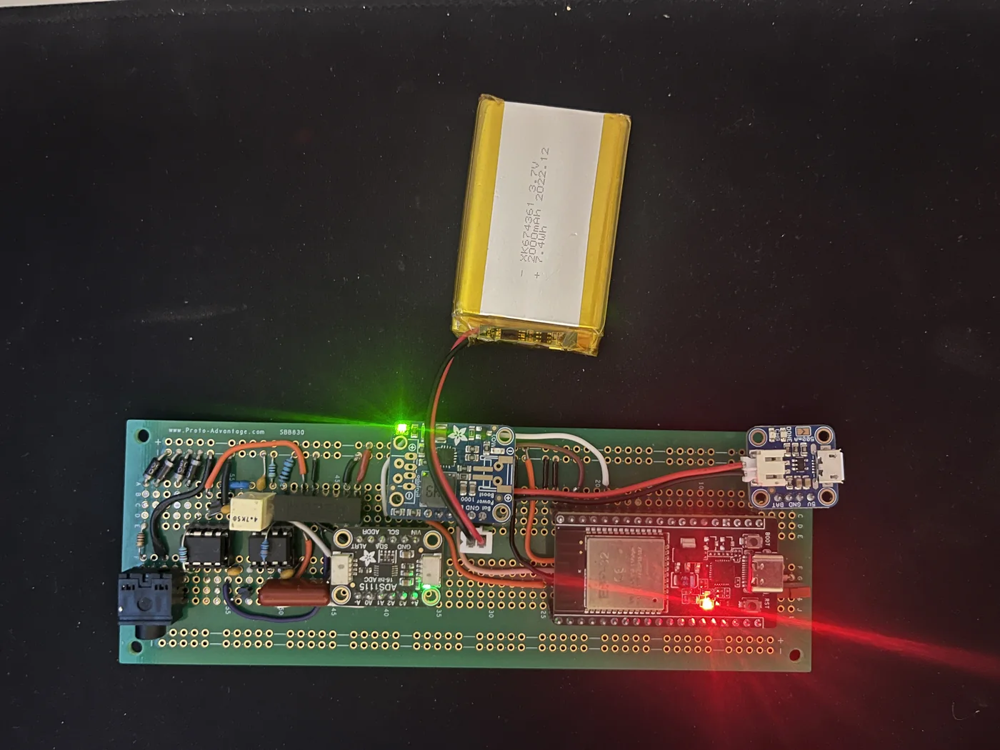
Hva vi bygde
Et gruppeprosjekt på to i Ingeniørprosjekt II. Systemet forsterker og filtrerer svake biopotensialer og viser EKG og puls i sanntid i nettleseren.

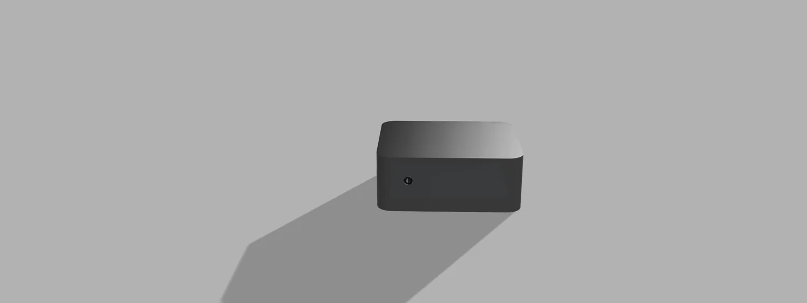
Systemet
- Analog del: instrumenteringsforsterker (INA126), høypassfilter på 33,8 mHz og et forsterkertrinn med TL071 og lavpassfilter på 16 Hz. Samlet forsterkning på omtrent 1000 V/V.
- Digital del: 16-bits ADC (ADS1115) på 860 punktprøver i sekundet, og en ESP32 som finner R-topper, beregner puls og sender data over WebSocket.
- Batteridrift med Li-ion-celle, og et 3D-printet hus.

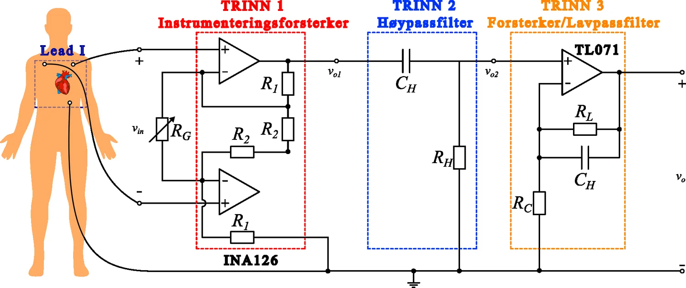

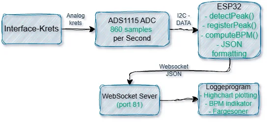

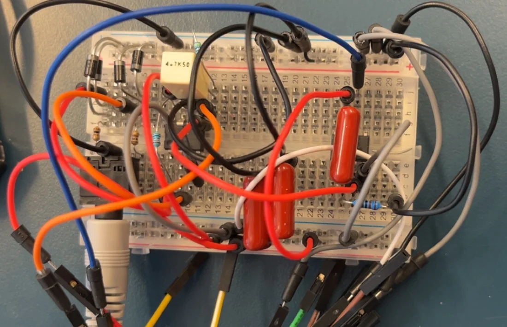

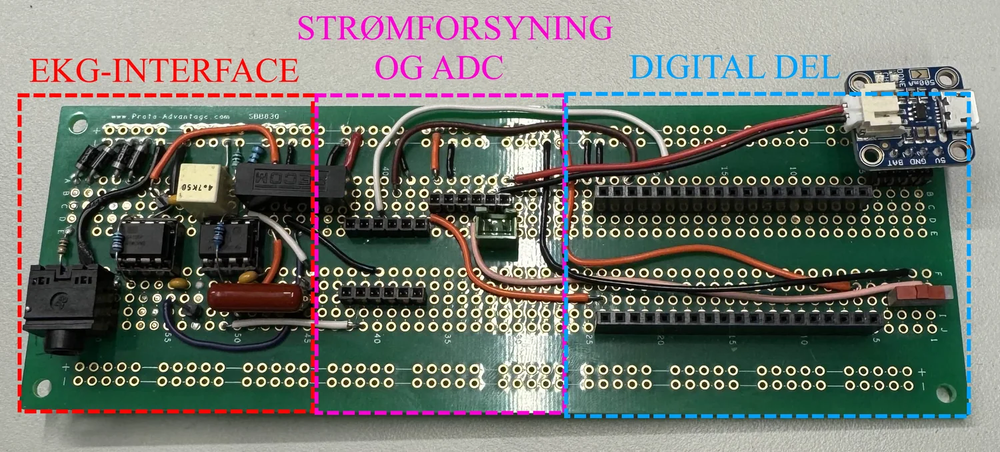
Resultater
- Tydelige QRS-komplekser på prototypekortet, og puls som avvek 1 til 3 slag i minuttet fra en Garmin pulsklokke.
- Målte knekkfrekvenser nær de beregnede, og CMRR på nesten 100 dB på PCB-en.
- Realisert i fire steg: simulering, brødbrett, prototypekort og firelags PCB tegnet i KiCad.

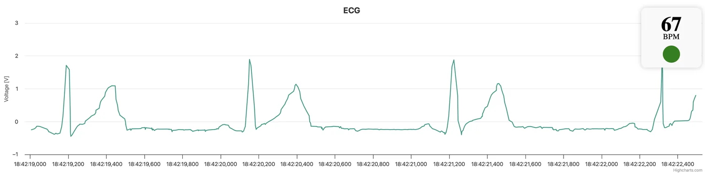

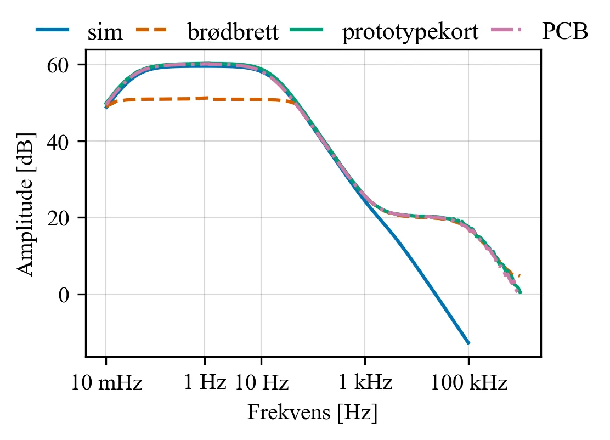

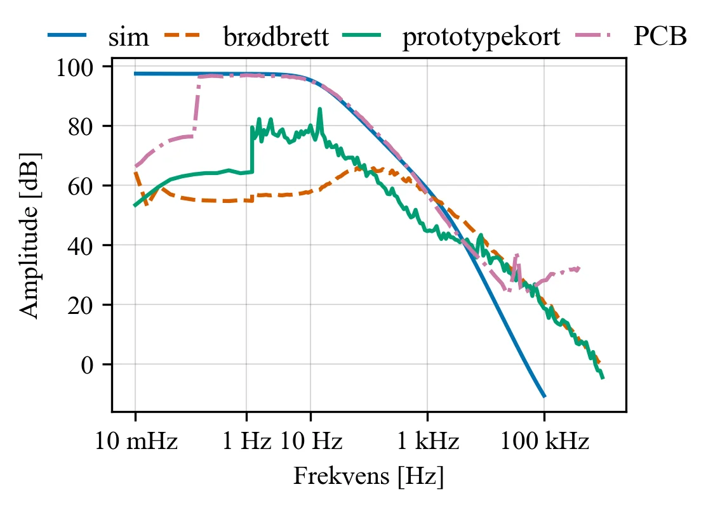
Det som ikke fungerte
PCB-en fikk et offset-problem i trinn 2 som sendte neste trinn i metning, så den ble aldri brukt til EKG-logging. Rapporten beskriver feilen åpent og foreslår retting i neste revisjon, mens all logging er gjort på prototypekortet.

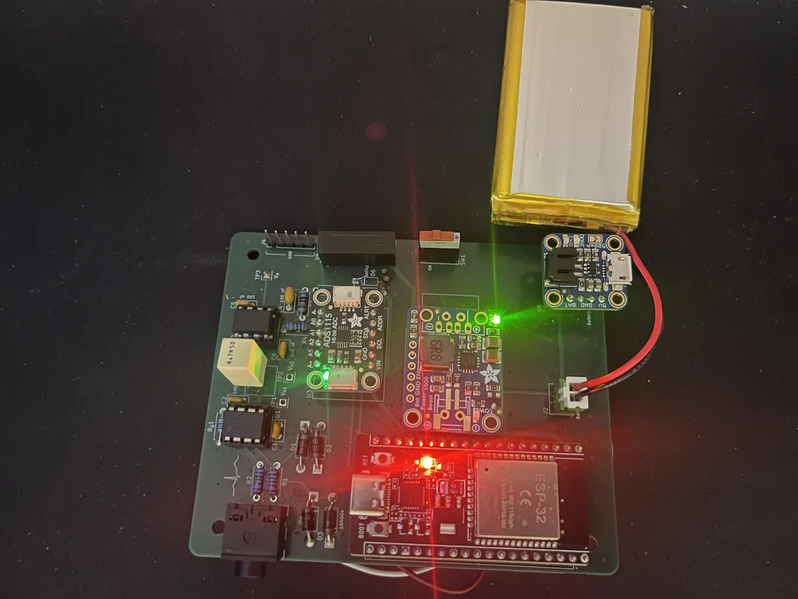

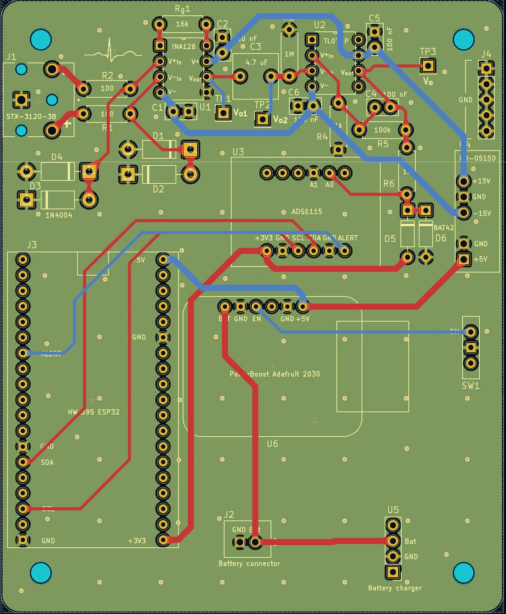